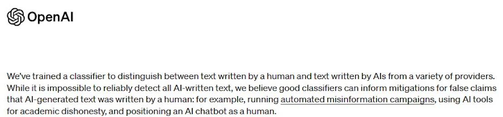

Is it Possible to Reliably Detect AI Generated Content?
The answer is no!
Thanks for reading.
Part of the panic/hype cycle around generative AI is the simple fact that it can do work that was previously the exclusive domain of people. For example, the illustration at the top of this post comes from Stable Diffusion with a simple prompt: “Lithograph of man in court on trial standing before an angry judge in the style of Hugo Gellert”. I generated a couple dozen images and picked the one I liked the best to convey my idea.
Just imagine being judged for something you worked very hard on because a person used some software that says you are a cheater and they put you on trial for it! Honestly, the idea that something like this could happen to a student at a vulnerable time in their development makes me feel sick to my stomach.
I Understand the Desire
The first time I saw good AI in action, I felt happy, excited, afraid, and angry – all at the same time.
Nobody Likes a Cheater
Most people, at a fundamental level, get angry at the idea someone might get something for free that they worked hrad to get for themselves. In the Christian Bible, there is a parable, The Parable of the Workers in the Vineyard, which illustrates this perfectly.
That generative AI gives power to people who lack skills which previously required years of practice and dedication is deeply troubling. The people who put in the work feel anger for the same reason as the workers in the vineyard who arrived in the morning – the whole situation just doesn’t feel fair! (And maybe it isn’t. I seem to recall my Daddy telling me that life isn’t fair once or twice)
Generative AI has the Potential to Cause a lot of Harm
Aside from the way it feels, there are very valid reasons why being able to detect AI generated content would be great were it possible. OpenAI is working on it and they explain why:

Unfortunately, the same article makes the following disclaimer:
We Should not Accuse People Based on a Coin Toss
Being correct on a positive ID only twenty-six percent of the time and being wrong nine percent of the time? That’s far too much reasonable doubt!
OpenAI Might Admit it Doesn’t Work – Hucksters Just want that Money
There are a lot of products out there and many possibly well-intentioned but certainly gullible members of the technical press hoping to sell you on this idea. A quick search proves what I am saying is true.
There are Many Reports of False Accusations Already
For example:
- In January, the moderators of /r/art started a conversation by banning an artist
- In May, a professor at Texas A&M helped raise awareness by failing a bunch of students who were set to graduate on the word of an AI detector
StackExchange Got it Right
Last month, StackExchange updated their policies on content moderation and AI. Specifically, they said “AI-generated content is not being properly identified across the network, and that the potential for false-positives is very high. Through no fault of moderators' own, we also suspect that there have been biases for or against residents of specific countries as a potential result of the heuristics being applied to these posts. Finally, internal evidence strongly suggests that the overapplication of suspensions for AI-generated content may be turning away a large number of legitimate contributors to the site.”
Their moderators are not happy! and now, for this and other reasons, they are on strike!
I am not involved with StackExchange in any way, but my opinion is that people who go there with questions are looking for answers and don’t really care and that they have a moderation system to remove low quality answers. Were I to join and post an answer only to be banned, I think I would remember the experience and stay away.
First, do no harm!
I’m not talking about medicine, but we should take guidance from Hippocrates here. I understand that there are important issues at stake, but the entire point of generative AI is to simulate human reasoning for the benefit of people. Some people are malevolent, and the tragedy of the commons is a real thing, but people deserve the benefit of the doubt at all times. Anything less is unjust.
What then shall we do?
I have a couple different friends who are teachers who have seen my posts and asked about AI. My advice is:
- Deal with it as an opportunity to enhance all forms of education
- Adjust to the world as it is today
Undeniably, our world has evolved and there is no going back. The metaphorical genie has been released from its bottle and Pandora's box has been irrevocably opened. The proliferation of generative AI has incited diverse calls for regulatory measures, and it's vital to discern the intent behind these voices. Some echo sincere concerns about the implications of this technology, while others appear to be motivated by corporate interest, seeking to leverage government intervention as a strategy to outmaneuver competitors.
In the United States, such regulation will face significant legal obstacles, considering the strong protection granted to freedom of speech under the First Amendment. However, the situation is more unpredictable in other jurisdictions where privacy laws, legislative interventions, and anti-trust actions play a more prominent role and are already in motion.
Although the future trajectory of this issue remains uncertain, one thing appears clear: generative AI has established its place in our society and is likely here to stay.
Some Practical Suggestions
First, when evaluating stories in the media and products for sale around AI, think critically and look for advice. It is a confusing, complicated, and important topic.
Second, look for simple low-tech solutions. For example, do writing assignments and assessments in the classroom. Use discussions. Keep homework and other unsupervised learning activities limited to things AI can’t do for the student.
Third, look for opportunities now to use generative AI as an educational assistant. One of the main things for which I use ChatGPT Plus, Bing, and Bard for is as a superior learning tool. I expect we will see many products aimed at the education marketplace soon that are helpful instead of harmful like the AI detector that delayed the graduation of the poor young people at Texas A&M.
A Note on the Images in this Post
The pictures were all generated using Stable Diffusion on my local desktop - except for one. Can you tell which one I took from an image search?
--Doug Ware, June 28, 2023